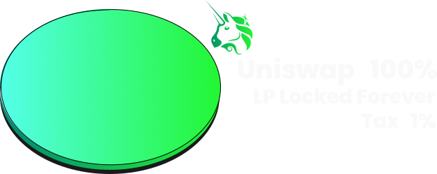

The tokenomics of SCRUM are designed to promote rapid growth
Building on what we learnt from past launches we have sent 100% of the supply to Uniswap v2 and locked the LP tokens in the contract permanently.
Because Uniswap v2 uses balanced pools the starting price will be very low which enables a lot of upside potential. We hope will attract early adopters to the project. The total supply is 1 Billion tokens all of which will be sent to the Uniswap pool.
There is a 1% transfer tax which will be sent to the MemesOnMondays team, this ensures aligned motivation and gives them a vested interest in the token's success.
Contract ownership is renounced, verified on Etherscan, open source code and no functions to remove liquidity
Our mission at MemesOnMondays is to create a billion dollar market cap memecoin. Read more about it here: https://memesonmondays.com/p/mission